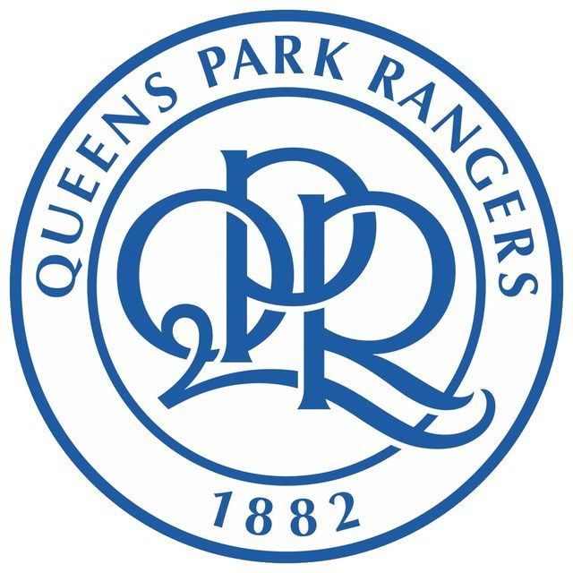
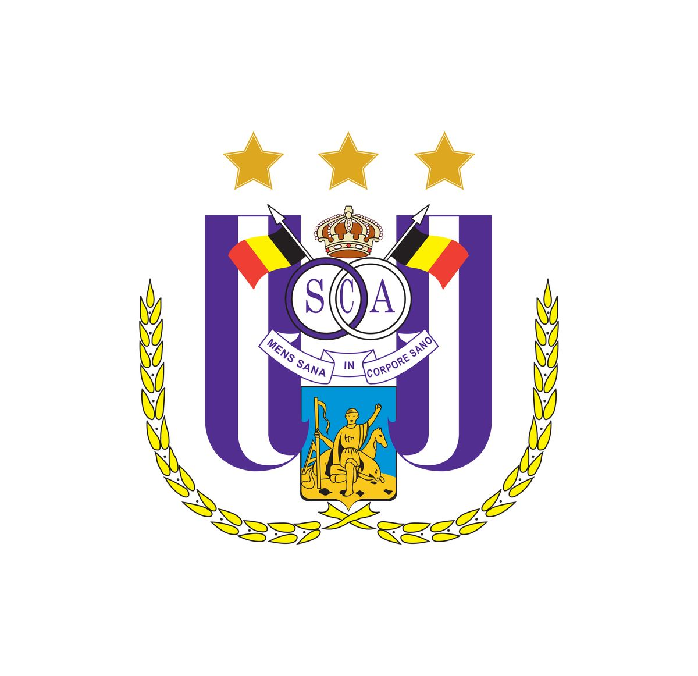
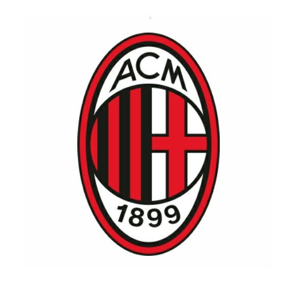
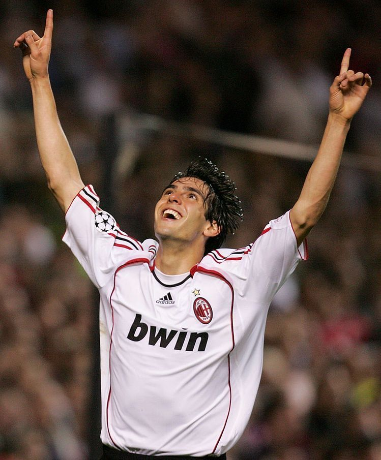
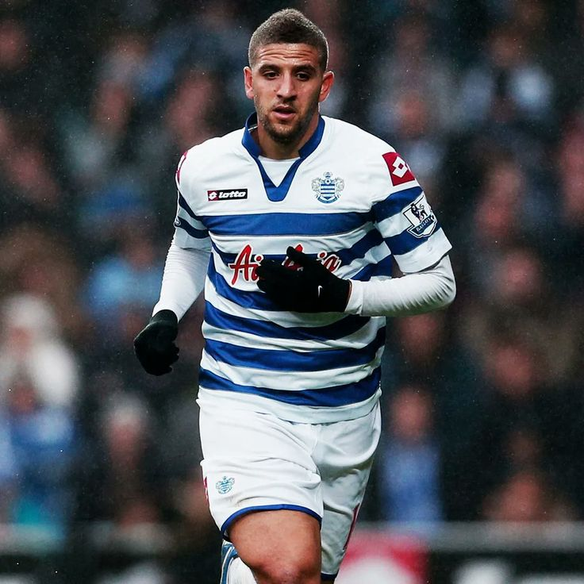
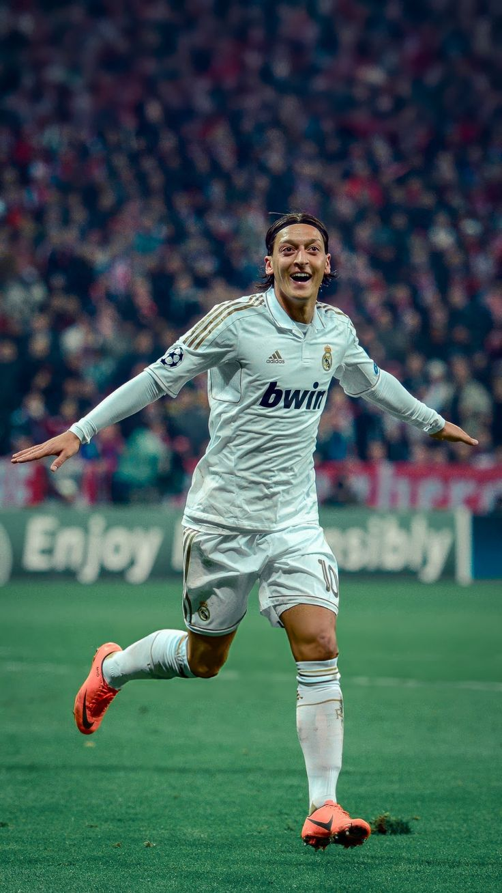

Voetbal
Voetbal is mijn hobby en werk. Bijna alles rond mij draait om voetbal, mijn personalieit is gewoon voetbal.
Waarom ik begon met voetbal
Ik begon met (club)voetbal spelen omdat mijn hoofd vol was en ik een manier wou vinden om het leeg te maken, toen had een goeie vriend van me mij gebracht naar deze kleine voetbalclub waar ik begon te voetballen.
Waar/Wanneer ik speelde
Ik begon met voetbal rond begin 2024, bij een kleine club genaamd Tubantia Borgerhout. ik heb daar bij de U15 gespeeld voor de rest van de 2023/2024 seizoen, daar bleef ik ook voor de 2024/2025 seizoen met de U17. Dan bij het eind van het seizoen ben ik naar Tor Deurne Pirates gegaan, waar ik de eerste helft van de 2025/2026 speelde. Dan ben ik naar Sporting Club Antwerp gegaan in december 2025, waar ik nu nog steeds speel.
Favoriete Clubs & Spelers
Mijn Favoriete club in België is RSC Anderlecht (ook de beste club in heel België) maar mijn aller favoriete team is Queens Park Rangers (QPR) In Londen, en AC Milan. De reden dat ik hun support is omdat één van mijn favoriete spelers, Adel Taarabt daar heeft gespeeld en Kaka (ja zijn naam is Kaka). Nog 1 van mijn favoriete spelers is Mesut Özil, hij is mijn inspiratie en één van de redenen waaarom ik begon met voetbal
Ac Milan: een Korte geschiedenis
bron - WikipediaAC Milan werd op 16 december 1899 opgericht door Engelse zakenlui onder leiding van Alfred Edwards en Herbert Kilpin. Al snel behaalde de club succes: in 1901 won Milan zijn eerste landstitel door Genoa CFC te verslaan. In 1908 ontstond een splitsing binnen de club, waarna Inter Milan werd opgericht, later de grote rivaal. Na een periode met mindere resultaten, vooral na de oprichting van de Serie A in 1929, verbeterden de prestaties na de Tweede Wereldoorlog door sterke spelers zoals Gunnar Nordahl, Gunnar Gren en Nils Liedholm. Milan won meerdere landstitels en in 1963 ook de Europacup I. In 1969 won Milan opnieuw de Europacup I, ditmaal tegen AFC Ajax. In de finale om de intercontinentale beker tegen Estudiantes de La Plata verliepen de wedstrijden extreem gewelddadig. Spelers van Estudiantes vielen Milan-spelers aan, onder meer Néstor Combin en Gianni Rivera. Milan won uiteindelijk de beker, maar de incidenten leidden tot arrestaties, schorsingen en zelfs gevangenisstraffen voor enkele Argentijnse spelers.
QPR: een Korte geschiedenis
bron - ChatGPT
Queens Park Rangers (QPR) werd in 1882 opgericht in Londen na een fusie tussen twee amateurclubs. De club speelde lange tijd in lagere divisies van het Engelse voetbal, maar groeide in de 20e eeuw uit tot een stabiele professionele club. In de jaren zestig kende QPR zijn eerste grote succes door in 1967 de EFL Cup te winnen tegen West Bromwich Albion. Daarmee werd het de eerste club uit de derde divisie die deze beker won. In de jaren zeventig beleefde QPR een sterke periode en werd het in het seizoen 1975/76 tweede in de English First Division, net achter Liverpool FC. Sinds de oprichting van de Premier League in 1992 wisselde QPR regelmatig tussen de hoogste divisie en lagere competities zoals de EFL Championship. Ondanks promoties en degradaties blijft de club bekend om zijn trouwe supporters en zijn stadion Loftus Road.
RSC Anderlecht: een Korte geschiedenis
bron - ChatGPT
RSC Anderlecht werd in 1908 opgericht in de Brusselse gemeente Anderlecht en groeide uit tot de succesvolste voetbalclub van België. In de beginjaren speelde de club vooral in lagere reeksen, maar in 1935 promoveerde Anderlecht naar de hoogste klasse van het Belgische voetbal, waar het sindsdien vrijwel onafgebroken actief bleef. Na de Tweede Wereldoorlog begon een lange periode van nationale dominantie. Anderlecht won talrijke landstitels in de Belgian First Division A en ontwikkelde zich tot een vaste waarde in het Belgische voetbal. Ook internationaal kende de club grote successen in de jaren 70 en 80. Anderlecht won twee keer de UEFA Cup Winners' Cup (1976 en 1978) en veroverde daarnaast meerdere Europese supercups. In die periode speelden bekende spelers zoals Paul Van Himst een belangrijke rol in het succes van de club. Vandaag blijft Anderlecht een van de meest prestigieuze clubs van België, met een rijke geschiedenis, een sterke jeugdopleiding en het stadion Lotto Park als thuisbasis.





